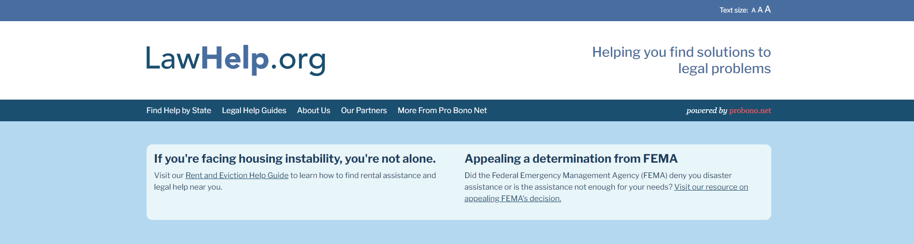
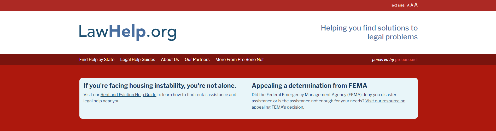
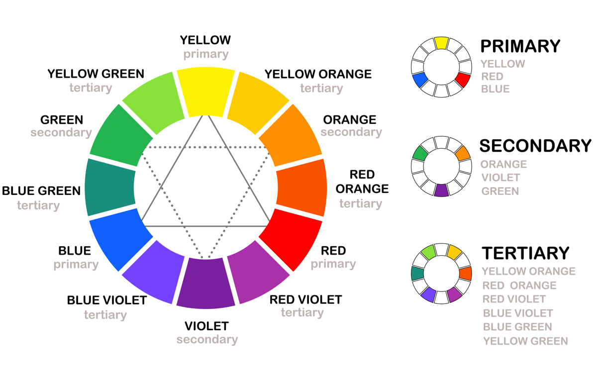
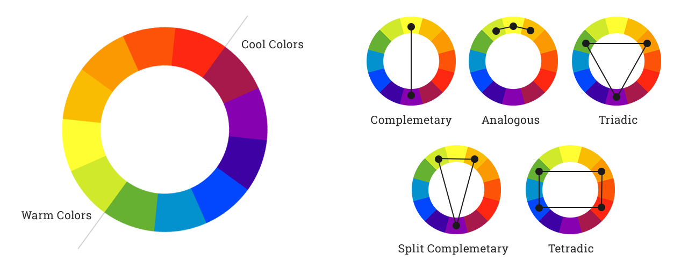

Introduction
Color is critical in web design. It influences user perception, emotions, and behavior. It helps to create a visually appealing and intuitive experience, enhances usability, and conveys the brand identity of a website. In this web article, we'll discuss several facets of color in web design and why they're important.
Color Psychology
Colors have a remarkable abilitiy to tap into our emotions. Hues such as green and blue can create a feeling of calmness and tranquility, while colors like red and orange may elicit feelings of passion and energy. Understanding common emotional responses to certain colors gives a designer the ability to use color with more intentionality.
To demonstrate this, let's take a look at some examples. This first image is of a website providing legal assistance. Notice the cool blue shades being used here.
Now, here is the same website but recolored to be red instead of blue.
Which color palette do you prefer? If you were seeking legal assistance, which example would give you greater confidence that this organization is capable of providing you with the help you need? There is no right answer; your response is your own. However, I would guess that you prefer the original color palette (blues). The red example personally makes me feel uneasy, especially in the context of a legal website.
The color palette of a website can strongly influence user's perception of a brand or how they interact with the website's content. Credibility, trust, and brand identity are all supported by a strategic usage color. A good color scheme aids in guiding the user through their experience on the website, while a bad color scheme creates confusion and may otherwise hinder a positive user experience.
Unfortunately, color psychology is not an exact science. Emotional responses to colors will vary from person to person, and between cultures especially. An example would be the color white, which often symbolizes purity in the west, but in some eastern cultures symbolizes death and grieving. Cultural associations with color are important to keep in mind for a website that has an international audience.
Color Theory Basics
At the core of color theory is the color wheel, which is a visual representation of the color spectrum, with primary, secondary, and tertiary colors. Primary colors are red, blue, and yellow. Mixing these produces the secondary colors green, orange, and purple. Tertiary colors are from a combination of a primary color and adjacent secondary color.
There is a concept known as "color harmony" which involves creating visually pleasing color combinations. Harmonies such as complementary, analogous, and triadic make it easier for designers to choose colors that work together.
Another concept that you may already be familiar with is color temperature. You can categorize colors into warm (yellow, orange, red) and cool (purple, blue, green). This is critical for setting the mood of a website.
Contrast is another important thing to keep in mind in web design. It plays an important role in directing the user's attention and in enhancing the readability of a website. Poor contrast between text and the background, for example, can make it difficult for the user to read your websites content. Additionally, a designer should be mindful of individuals with varying visual abilities, including poor eyesight and color blindness. In particular, contrasting red and green is something that could cause difficulties for many color blind users.
The Role of Color in User Experience
Color plays a big role in creating a seamless user experience. One of the ways designers use color is for navigation and hierarchy. Color acts as a visual roadmap that guides users through the webpage. By giving different colors to different sections, it makes navigation far more intuitive. Here's an example from a website you might be familiar with. Notice the clear distinction between the navigation bar, the banner, and product categories.
The emotional impact of color has a big impact on user engagement. Colors can evoke certain emotions, and designers strategically use this when thinking about the user experience of their website. This is why you see patterns of certain colors being used for certain kinds of websites/applications; a calming blue for a wellness app or exciting reds for an entertainment platform like YouTube or Netflix. These colors shape how the users feel while interacting with the application.
Another thing color helps with is feedback and interaction. When you hover over or click a button on a website, you will often see a slight change in color. This indicates to the user they their input was successful, making the website feel more responsible and enjoyable to interact with, and overall creating a more satisfying user experience.
Conclusion
Color is and will continue to be a critical part of web design, extending beyond just aesthetics into guiding navigation, evoking emotion, and overall helping to build a positive experience for the user.